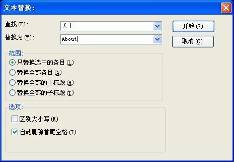

当新建或打开一个工程后，您可以通过用鼠标点击任意的目录项，然后在目录编辑区的右键弹出菜单里选取"替换..."将看到这个对话框。关于这个对话框的使用请看下面的具体描述.

查找:
在这里输入您要查找的文字。
替换为:
在这里输入您要替换为的文字。
范围 | 只替换选中的条目:
范围 | 替换全部条目:
替换目录编辑区的全部条目。
范围 | 替换全部的主标题:
替换目录编辑区的全部大标题。
范围 | 替换全部的子标题:
替换目录编辑区的全部小标题。
选项 | 区别大小写:
决定在替换时是否区分大小写。
选项 | 自动删除首尾空格:
决定在替换时是否自动删除首尾的空格。
| 版权所有 © 2000-2007 国华软件 保留全部权利. |